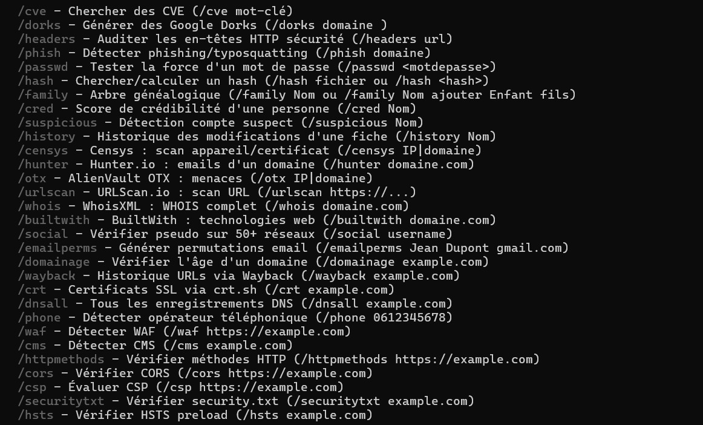

ULTRON
Unité de Lutte et Traitement des Réseaux en Opérations Natives — IA de cybersécurité autonome en français

Contexte
ULTRON est une IA de cybersécurité autonome conçue pour opérer en local ou sur le cloud (Oracle Cloud ARM64). Elle combine multiples fournisseurs LLM avec fallback automatique, mémoire vectorielle ChromaDB, et un système de profilage adaptatif pour apprendre le nom, les projets, l'humeur et le fuseau horaire de son utilisateur.
Problème
Les outils de cybersécurité existants sont soit trop spécialisés (un seul domaine), soit trop complexes à orchestrer manuellement. Aucun assistant français open-source ne propose une chaîne complète OSINT → Dark Web → APIs → Cyber → Défense en un seul scan, avec un moteur proactif capable d'auto-évolution.
Solution
Un assistant modulaire en Python 3.10+ avec 98 outils répartis en 8 modules (OSINT, Dark Web, APIs externes, Cyber, Défense, Utilitaires, Scan réseau, Advanced OSINT). Scans chaînés automatisés, fiches personnes chiffrées, watchers temps réel, mode Attaque/Défense, skills YAML, tâches planifiées et dashboard web Flask.

Architecture
Développé en Python 3.10+, ULTRON tourne en local (Windows) ou sur Oracle Cloud ARM64. Il utilise un modèle multi-provider avec fallback automatique : Groq (Llama 3.3 70B) → Google Gemini → OpenRouter. La mémoire est divisée en court terme (RAM deque) et long terme (ChromaDB vectorielle avec sentence-transformers).
Le système de profilage adaptatif permet à l'IA d'apprendre le nom, les projets, l'humeur et le fuseau horaire de son utilisateur directement depuis les conversations, offrant une expérience personnalisée.
Modules et outils
OSINT Recon (2 outils) — OSINT web multi-agent avec 15 requêtes DDGS parallèles, extraction d'emails, téléphones et réseaux sociaux.
OSINT Advanced (7 outils) — Social 49 plateformes, permutations email, âge domaine, Wayback Machine, crt.sh, DNS, opérateur téléphone.
Dark Web Scanner (2 outils) — Fuites HIBP, Pastebin, Telegram, Dehashed/IntelX.
External APIs (19 outils) — Shodan, VirusTotal, IPinfo, AbuseIPDB, SecurityTrails, Censys, Hunter.io, OTX, URLScan.io, WhoisXML, BuiltWith, GreyNoise et plus.
Cyber Tools (19 outils) — CVE, tech detect, dorks, password strength, phishing detect, cookie audit, hash lookup, reverse IP, WAF, CMS, HTTP methods, CORS, CSP, HSTS, port scan.
Defense Tools (6 outils) — VPN/Proxy/Tor detection, SSL/TLS audit, DNS security, DMARC/SPF/DKIM.
Utility Tools (12 outils) — Base64, hex, hash, password generator, UUID, timestamp, CIDR, user-agent, port lookup, text analyze.
Network Scanner (3 outils) — Scan ports, connexions réseau, DNS lookup.
Fonctionnalités clés
Scans chaînés — /ultron <cible> exécute OSINT → Dark Web → APIs → Cyber → Défense en séquence avec rapport sauvegardé.
Fiches personnes — Base chiffrée (Fernet+PBKDF2) avec arbre généalogique, score de crédibilité, détection comptes suspects, historique.
Watchers — 5 daemons temps réel : CPU/RAM/température, fichiers modifiés, RSS news, nouveaux ports, intégrité fichiers.
Moteur proactif — Évalue la pertinence des événements via LLM, notifications en heures ouvrées, anti-spam.
Auto-évolution — Analyse son propre code, écrit des améliorations, les teste en sandbox, commit sur GitHub.
Mode Attaque/Défense — Persistant, change le prompt système LLM et les priorités d'outils.
Skills YAML — 6 skills (Brainstorm, Cybersec, OSINT, Recon, Phishing, AuditSec) injectés via @nom.
Tâches planifiées — Surveillance automatique avec APScheduler (types: osint/darkweb/cyber/defense/ultron).
Dashboard web — Interface Flask avec scan one-click, outils rapides, gestion des tâches, consultation des rapports.